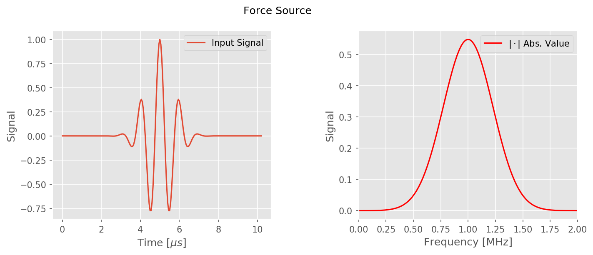
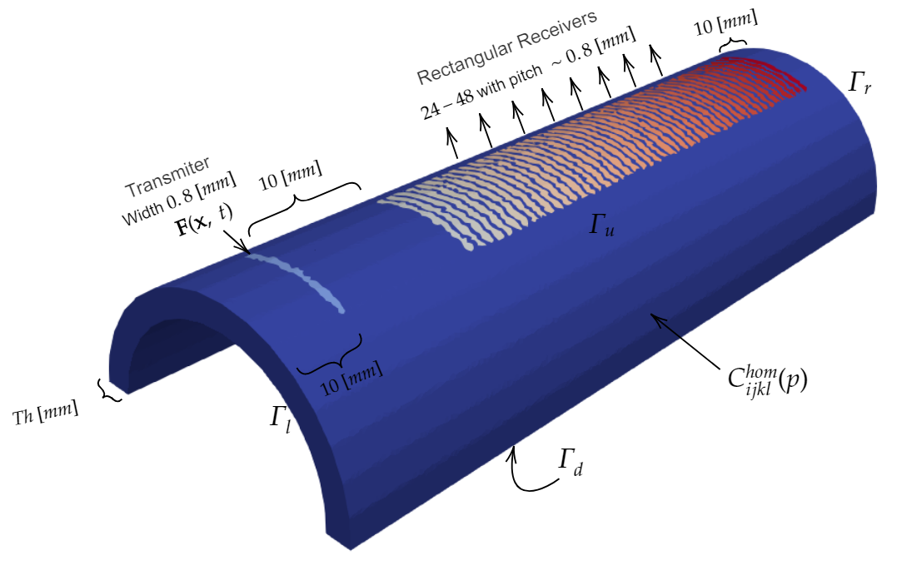

Numerical Studies of a Homogenized Bone Model
Reidmen Arostica B.
FCFM, U. of Chile - December 2018.
Microstructure
Cortical Bone is a complex, highly organized hard, and lightweight tissue defined by an hierarchy of microstructures.
From a mechanical point-of-view, it's defined as a two-phase composite material: a soft phase mainly containing pores of organic fluid and soft tissues embedded in hidroxyapatite and collagen compound.
Mesoscale
The main components preponderant to the mechanical behaviour are defined in the size between $50-200 [\mu m]$.
- Haversian Canals $\sim 50 [\mu m]$
- Resorption Cavities $\sim 50-200 [\mu m]$
Observed mesoscale microstructure


Relevance
The study such tissue, gives us insight of various clinical parameters such as accumulated stress damage, collagen quality, bone turnover and other necessary to diagnose the status and quality of bone.
Therefore, an early diagnose of osteoporosis, a condition where less bone is added than taken away leading to skeletal fragility and increasing risk of fractures.
Clinical Devices
Dual X-ray Absorptiometry (DXA) provides the Bone Mineral Density (BMD) values used to diagnose osteoporosis, based in non-volumetric measures of bone quality.
For fidelity, X-ray Quantitative Computed Tomography (QCT) is used to assess volumetric density, but is rather expensive with radiation costs involved.
QuantitativeUltrasound techniques (QUS)provides one possible answer to such deficiencies.
Ultrasound Techniques
Minonzio et al., 2018 developed a QUS procedure to assess bone quality, by retrieving two relevant parameters of bone quality: cortical porosity and thickness.
The methods describes a lower-cost procedure, with non-invasive nor radiative nature.
It is expected to reach gold-standard predictions, but wider validation must be obtained and robustness reseach must be taken in consideration.
Schematic description
- The approach is based on axial transmission measurements which consist of guided waves recodings that propagate throuh the bone.
- It corresponds to studying the response to a ultrasonic surface excitation produced at the surface in form of dispersion curves.
- Wave-guide characteristis such as thickness and porosity are deduced from the dispersion curves by finding the best fitting to theoretical references.
Schematic description of the experimental procedure and idealization of the macroscopic domain with their characteristic microstructure.
Signal Processing
- Each cycle of measurements consist of a sequential excitation of $N^{E} > 0$ emitters, which yield $N^{E}\times N^{R}$ time series array.
- The multi-channel series, $\{ S(t_m, e_m, x_p) \}_{(n,p) \in [N^T]\times [N^R]}$ at fixed emitter $x_p, p \in \{1,\dots, N^E\}$ is Fourier transformed.
- Such transformed array $\hat{S}(\cdot, e_m, \cdot)$ for each emitter is decomposed by Singular Values Method (SVD), in the form \begin{equation} P(e_m)\hat{D}P(e_m)^T = \hat{S}(e_m) \quad m \in \{1,\dots, N^E\} \end{equation}
- The Lamb-waves are then obtained from a function over the first $N^E_*$ resonant modes: \begin{equation} L(P) := \sum_{m=1}^{N^E_*} P(e_m)\overline{P(e_m)} \end{equation}

Comparison between real signal recording (left) and fitting of Lamb-curves on the signal (right).
Theoretical-based Objectives
- Study the existence of the elastodynamic multiscale problem used to model the mechanical behavior of bone and the homogenization heuristic.
- Describe the homogenized model and study the cell problems that define the elasticity tensor.
- Extend the description to a Kelvin-Voigt viscoelastic formulation to add realistic damping effects on the signal.
Numerical-based Objectives
- Simulate the experimental procedure in a 2D domain retrieving the Lamb curves, thus validating statistically under such controled scenario the inverse problem of Foiret et al. 2014, Minonzio et al. 2018
- Simulate on 3-dimensional domains assessing the curvature effects and intrinsic irregularities from the bone architecture.
- Compute homogenized models using the FEM method comparing with the standard Parnell and Grimal. 2008 reference.
- Similarly, study the effects viscosity on the homogenized model by defining on the two-scale framework the so-called quality factors comparing with the reference Bernand et al. 2015.
Hypothesis and Scale Separation
- For each point $\mathbf{x} \in \Omega$ of the domain, let us consider a fast variable $y = \epsilon^{-1} x \in \mathbf{Y}$ where $\mathbf{Y}:= (0,1)^n$ and $n \in {2,3}$ denotes the microstructure domain.
- The elements of the elastic tensor, are oscillatory in the form $C_{ijkl}\big(\frac{\mathbf{x}}{\epsilon}\big) \in L^2 (\mathbf{Y})$, so $\mathbf{Y}$-periodic.
Idealization of the periodic domain microstructure following a square microstructure.
Formally, our PDE problem with highly oscillated terms is modelled by:
Find $u(\mathbf{x},t) \in \Omega_T$ being $\Omega$ domain, with $\partial \Omega = \Gamma_D \cup \Gamma_N$ regular enough, solution to:
\[ (P) \left \{ \begin{aligned} \rho\big(\frac{\mathbf{x}}{\epsilon}\big) \partial_{tt} u - \nabla \cdot \sigma(u) &= \mathbf{0} & \text{ in } \Omega_T \\ \sigma(u)_{ij} & = \mathbf{C}\big(\frac{\mathbf{x}}{\epsilon}\big)_{ijkl} \mathbf{e}_{kl}(u) & \text{ in } \Omega_T \\ u & = \mathbf{0} & \text{ in } \Gamma_D \times [0, T]\\ \sigma(u) \cdot n & = \mathbf{F}(\mathbf{x},t) & \text{ in } \Gamma_N \times [0,T] \end{aligned} \right . \]
The two-important scales associated to the model.
It is assumed a two-scale separation in variables $(\mathbf{x}, \frac{\mathbf{x}}{\epsilon})$ being $\epsilon$ the ratio between them.
- We seek a asymptotic displacement (solution) describing the behaviour at different orders of $\epsilon$ for each time $t > 0$, by \[ \begin{aligned} u(\mathbf{x}, \epsilon, t) & = \sum_{a=0}^{\infty} \epsilon^{a} u^{(a)}\big(\frac{\mathbf{x}}{\epsilon},t\big) \\ &= u^{(0)}\big(x, \frac{\mathbf{x}}{\epsilon},t\big) + \epsilon^{1} u^{(1)}\big(\frac{\mathbf{x}}{\epsilon},t\big) + \epsilon^{2} u^{(2)}\big(\frac{\mathbf{x}}{\epsilon},t\big) + r(\mathbf{x}, \epsilon, t) \end{aligned} \] being $\mathbf{e}_{kl}(u) = \frac{1}{2}(\partial_{x_k} u_l + \partial_{x_l}u_k)$ the strain tensor.
- Naturally, we would like $\epsilon \rightarrow 0$, the convergence to an effective (macroscopic) model and estimations of the error.
Applying the expansion on the governing model $(P)$ we obtain after separating on $\epsilon$ orders the follows expression:
\[ \epsilon^{-2} P_{-2} + \epsilon^{-1} P_{-1} + \epsilon^{0} P_{0} + R = \mathbf{0} \] being each term of orders $\epsilon^{-2}, \epsilon^{-1}, \epsilon^{0}$ imposed to be $\mathbf{0}$ to satisfy the above equality and $R$ the terms of remaining order $\epsilon^{a}, a > 0$ being the error.
Explicitily, defining $L_{\alpha \beta}(\,) = \partial_{\alpha_i}\big( C_{ijkl}\mathbf{e}_{kl,\beta}(\, ))$ we seek:
- $P_{-2} = L_{yy}u^{(0)} \overset{\text{impose}}{\longrightarrow} = \textbf{0}$
- $P_{-1} = L_{xy}u^{(1)} + L_{yx}u^{(0)} + L_{yy}u^{(1)} \overset{\text{impose}}{\longrightarrow} = \textbf{0}$
- $P_{0} = L_{xx}u^{(0)} + L_{xy}u^{(1)} + L_{yy} u^{(1)} + \rho(\mathbf{y}) u^{(0)} \overset{\text{impose}}{\longrightarrow} = \textbf{0}$
Imposing the zero conditions, it follows:
- At order $\mathcal{O}(\epsilon^{-2})$ the macroscopic displacement in obtained
-
At order $\mathcal{O}(\epsilon^{-1})$ the cell problems obtained, which define the homogenized coefficients.
- They are expressed as $N^{rs}(\mathbf{y})$ $\mathbf{Y}$-periodic solutions to the equation: \[ \begin{equation*} \partial_{y_j}\big[ C_{ijkl}(\mathbf{y}) \mathbf{e}_{kl,y}\big( N^{rs} (\mathbf{y})\big) \big] = - \partial_{y_j} \big[ C_{ijkl}(\mathbf{y}) \big] \end{equation*} \]
- Supplemented with condition $\langle N^{rs} \rangle_{\mathbf{Y}} = \mathbf{0}$
Finally, at order $\mathcal{O}(1)$, its obtained the The homogenized (effective) model, which after reagruping the terms becomes:
\[ \begin{aligned} \langle \rho\rangle_{\mathbf{Y}} \partial_{tt} v_i - \partial_{x_j} \big[ C^{hom}_{ijrs} \mathbf{e}_{rs,x}(v)\big] = \mathbf{0} & \text{ in } (0,T)\times \Omega \\ \sigma^{hom}(v) \cdot n = \mathbf{F} &\text{ in } (0,T)\times \Gamma_N \\ v = \mathbf{0} & \text{ in } (0,T)\times \Gamma_D \\ \partial_t v(0) = v(0) = \mathbf{0} & \text{ in } \Omega \end{aligned} \] being $C_{ijrs}(p) := \langle C_{ijrs}(\mathbf{y}) + C_{ijkl}(\mathbf{y}) \mathbf{e}_{kl,y}\big(\mathbf{N}^{rs}(\mathbf{y})\big) \rangle_{\mathbf{Y}}$.
The full model with equations involved.
Convergence Result
Theorem. Assuming that $F \in L^{\infty}(0,T; \mathbf{L}^2(\Gamma_N))$ and also $N^q \in L^{\infty}(0,T;\mathbf{H}^1(\Omega))$ for each $q \in \{1,\dots,N\}$. Then the solutions $u^{\epsilon}$ and $u^{0}$ of multiscale and homogenized problems respectively, satisfy the following inequality: \begin{equation} \Vert u^{\epsilon} - u^{0} - \epsilon \mathbf{N}^s (\frac{\mathbf{x}}{\epsilon})\partial_{x_s}u^0 \Vert_{L^{\infty}(0,T;\mathbf{H}^1(\Omega, \Gamma_D))} \lesssim \epsilon^{1/2}\Vert u^{0} \Vert_{L^{\infty}(0,T;\mathbf{H}^3(\Omega))} \end{equation}
Energy Estimation
Assuming the hypothesis of he above theorem, it follows the convergence results of the energy operators, i.e., \begin{equation} \vert E_{\epsilon} (u^{\epsilon}) - E_0 (u^{0}) \vert \lesssim \epsilon^{1/2} \Vert \mathbf{F} \Vert_{L^{\infty}(0, T; \mathbf{L}^2(\Gamma_N))} \end{equation}
Numerical Solutions to Cell Problems
The non-linear component is directly related to the solution of the cell problems.
They are described by the unique vector-valued solutions $\mathbf{N}^{rs} \in \mathbf{H}^1_{\#}(\mathbf{Y})$ for each $r,s \in \{1,\dots, d\}$ of the elliptic PDE system: \begin{equation} \begin{aligned} - \partial_{y_j}\big[C_{ijkl}(\mathbf{y}) \mathbf{e}_{kl,y}\big(\mathbf{N}^{rs}(\mathbf{y})\big) \big] = \partial_{y_j}\big(C_{ijrs}(\mathbf{y}) \big) & \text{ in } \mathbf{Y} \\ \big[C_{ijkl} (\mathbf{y}) \mathbf{e}_{kl, y}\big(\mathbf{N}^{rs})(\mathbf{y}) \big) \big] n_j = \mathbf{0} & \text{ on } \partial\mathbf{Y} \end{aligned} \end{equation} with average equal $\mathbf{0}$ condition.
Elastic Model
- The material coefficients are assumed over the characteristic cell in the form: \begin{equation} C_{ijkl}(\mathbf{y}) := C^m_{ijkl}\mathbb{I}_{\{ \mathbf{y} \in \mathbf{Y}_m \}} + C^f_{ijkl} \mathbb{I}_{\{\mathbf{y} \in \mathbf{Y}_p \}} \end{equation}
- Being each component with transverse isotropic elatic behavior, describing a full elastic tensor in \text{Voigt} notation: \begin{equation} C_{ij}(\mathbf{y}) = \begin{bmatrix} C_{11}(\mathbf{y}) & C_{12}(\mathbf{y}) & C_{13}(\mathbf{y}) & 0 & 0 & 0 \\ C_{12}(\mathbf{y}) & C_{11}(\mathbf{y}) & C_{23}(\mathbf{y}) & 0 & 0 & 0 \\ C_{13}(\mathbf{y}) & C_{23}(\mathbf{y}) & C_{23}(\mathbf{y}) & 0 & 0 & 0 \\ 0 & 0 & 0 & C_{44}(\mathbf{y}) & 0 & 0 \\ 0 & 0 & 0 & 0 & C_{44}(\mathbf{y}) & 0 \\ 0 & 0 & 0 & 0 & 0 & C_{66}(\mathbf{y}) \end{bmatrix} \end{equation}
We take into account a 2D square model as microstructure characterizing the mesoscale
The choice of periodic geometry shows similar results to the curves obtained in Parnell et al. 2008 (reference)
Solution are obtained using FEniCS library in Python at different mesh sizes. For example, in the case of a 2D square.

Diagonal coefficients of the simulated homogenized elastic tensor.

The Non-diagonal coefficients of the homogenized elastic tensor.
Our main problem is related in both cases to the behavior of the $C_{66}$ coeffs, and moreover with $C_{12}$. Both related to the anti-plane behavior.
The main reason is related to the different boundary conditions possible to impose in the cell problem, since its necessary to impose a average to zero boundary condition.
Let us expand the 2-dimensional model to a 3-dimensional cubic microstructure.
Using a cubic microstructure representing the mesoscale.

Main diagonal coefficients

Non-diagonal coeffs. numerically close to reference solutions. Except the $C_{66}$ coeff. The model doesn't incorporate possible non-axial elastic behavior.
Percentage Error
2-Dimensional Simulations
The simulation setting, is defined by a rectangular domain imitating the experimental setup, i.e.,
- A set of 5-12 different sources, defining unique wave-guide propagation profiles. Each one activated independently, characterizing the porosity and thickness parameters.
- Detection is obtained by 24-72 different sensors depending on the configuration used.
- Propagation profiles are compared with PG results, which define the reference.
Tranducer force
Each force acting at the surface is modeled normal to horizontal plane of the domain surface, pointing to the mid section of the cortical bone, with central time $t_0 >0$, angular velocity $\tau_0 > 0$ at positions $\Gamma_{u_i} \subset \Gamma_N$ in the form: \begin{equation} \mathbf{F}(\mathbf{x},t) = - e^{\frac{(t-t_0)^2}{2\sigma^2}} cos(2 \pi t \tau_0) \mathbb{I}_{\mathbf{x}\in \Gamma_{u_i}} \hat{j} \text{ on } \Gamma_N \end{equation}
Implementation done using $t_0 =1 [\mu s]$, $\sigma_0 = 0.7 [\mu s], \tau_0 = 1$. Left side: Time plot; Right side: FFT Force.
Schematic setting
A linear elastodynamic model is simulated using FEM discretization on space and $\beta,\gamma$-Newmark method on time, implemented with FEniCS
Multiple Sources
- It is simulated under the setting of 8 sources activated independently, thus defining 8 different wave-guided propagation.
- The computational times in this case vary according to the thickness parameter.
- At a test size of $40 [\mu m]$ for cell diameter, the simulation takes $\sim 16-28$ hours on a high performance laptop, for which at cell diameters of $20 [\mu m]$ would take $\sim 5-7$ days.
Lamb waves for the Multisource simulations.

Case of porosity at $20 \%$ and cortical thickness of $\sim 13 [mm]$
Single Source
- The multisource input force generates problems of computations under limited resources and time.
- The recording obtained from each source excitation define spacially translated wavefronts.
- Since the homogenized tensor is constant in space, by the symmetry of the space the setting can be reduce to just one source now adding more receptors.
- The simulations times ranges regarding the thickness parameter used. On a Xeon E5-2660 processor with 4 Gb. DRR3 RAM for a $20 [\mu m]$ mesh, it takes $\sim 18-26$ hrs. to describe the full simulation using 1024 time steps assciated to $51.2 [\mu s]$ of real-time experimentation.
Recorded dispersion curves

Case of Thickness $3.3 [mm]$ and $6\%$ of porosity.
Statistical Analysis
The validation of the parameter recuperation is done by using uniformly distributed pairs in the parameter space of biomedical interest, and compare the results regarding the Root Mean Square Error (RMSE)
| $\textbf{RMSE}$ | $\textbf{Porosity}\, (0-30) \%$ | $\textbf{Thickness}\, (1-4) [mm]$ |
|---|---|---|
| Axial Meas. | $0.87 \%$ | $0.02 [mm]$ |
| Anti-Axial Meas. | $0.47 \%$ | $\ll 0.01 [mm]$ |
| Composed | $1.2 \%$ | $0.03 [mm]$ |
3-Dimensional Simulations
It is now studied the effect of radial wave behavior on the recorded signal, assessing the wave-guide propagation by cylindrical and fully irregular type domains.
- A Half-Cylinder domain that assess curvature effects on the recorded signal and the distortion generated from the wave interaction. It describes the first approximation of realistic bone samples from $\mu$-CT images.
- A rugous model retrieved from the $\mu$-CT images to assess the wave propagation now by the interior irregularities and non-uniformities naturally presented on bone samples.
Half-Cylinder Case
The implementation setting ressembles the 2-dimensional case, by using the same type of force at the emitters
- A set of 40 sensors are modelled to capture surface forces $\sigma^{hom}(u)\cdot n$ at each location generated by the propagating wave-front.
- The elastodynamic simulation of the homogenized transverse isotropic model is done using a single emitter.
- The simulations times ranges regarding the thickness parameter used. On a Xeon E5-2660 processor with 5 Gb. DRR3 RAM for a mesh of $40 [\mu m]$ of cell diameters, takes $\sim 25-35$ hrs. to describe a full device recordings discretize by 1024 time steps associated to $51.2 [\mu s]$ of real-time experimentation.
Schematic setting
Tetraedrical mesh defined using $\texttt{CGAL}$ with mean cell diameter of $40 [\mu m]$. Number of vertices: $\sim 170.000$; Number of cells: $\sim 956.000$. Colors indicating tagged subdomains.
A linear elastodynamic model is simulated using FEM discretization on space and $\beta,\gamma$-Newmark method on time, implemented with FEniCS

Recorded dispersion curves

Recorded dispersion curves in the form of $(f,k)$-diagram of the $L_M(f,k)$ functional. Case of $11 \%$ porosity with $1.8 [mm]$ thickness.
The parameter recuperation retrieves $\sim 1.01 \%$ of porosity and $1.801\%$ thickness.
Irregular Domain Case
The half-cylinder domain simulations shows clear correspondence with the 2-dimensional case, showing the prevalence of axial-propagation over the non-axial effects that occurs during the wave-front.
It does not incorporates irregularity effects arising from the curvature nor infero-interior surfaces presented on real bone samples.
Mesh Generation
The mesh genration is done by the following data-flow procedure, by applying several layers of software. It creates a realistic complex tetrahedral mesh from a processsed volumetic image using $\texttt{CGAL}$ library.
- A scaling procedure from $9 \, [\mu m]$ voxel images is done to restrict memory consumption of the $\mu$-CT images stack.
- The stack is processed based of grayscale values regarding the materials of interest.
- A volumetic image is created, and parametrized to be processed with $\texttt{iso2mesh}$ library with mesh efficient mesh generation algorithms.
Data-Flow: The mesh generation involves a sequence of frameworks to optain a fully automatized procedure.
Mesh from $\mu$-CT images

The adaptive mesh resembles a real geoetry by meshing the inner surface irregularities characteristic of the natural cortical bone. Generated from $1000$ slices of $\mu$-CT images, corresponding to thickness $\sim 1.8 [mm]$ and experimentally measured porosity $\sim 11 \%$. It is described by $\sim 430.000$ points and $\sim 1.400.0000$ cells.
Implementation Setting
- 1-source type simulation is done, over a set of 48 tagged receptors.
- Each receptor is defined for width $\sim 0.8 [mm]$ and height $\sim 8 [mm]$ located at the boundary, recoding the resulting force $\sigma^{hom}(u)\cdot n$.
- The Elastodynamic PDE is re-scaled to the $56 [\mu m]$ voxel length and discretized by FEM in space and $\beta-\gamma$-Newmark scheme in time.


The elastodynamic model over the complex domain at $\sim 8 [\mu m]$ of cell tetrahedras, requires 2 cores on a Xeon E5-2660 processor with $\sim 8 Gb$ DDR3 RAM and $\sim 7$ days of computation time.
Dispersion curves
The effects of the wave-front with the domain irregularities are shown in the $(f,k)$ diagram. It describes discrepancy of the reconstructed dispersion curves regarding the reference. In particular on the first symmetric and antisymmetric mode.

Viscous Predictions
- Factors o risk fracture such as thickness, porosity and others defied the bone quality assessed by DXA techniques, and BMD values.
- The QUS method from Minonzio, Foiret et al. 2016, 2018 is based on recording from the guided-wave propagation over the media, where damping behavior naturally is presented on the signal.
- Resonant Ultrasoung Spectroscopy (RUS) techniques assess such behavior on cortical bone, produced from the collagen fibers.
- Description of daming effects is not new, Bernard et al 2015 studied such behavior from experimental measurements on frequency domain, with elastic behavior: \begin{equation} C_{ij}^* = C_{ij} + i C_{ij}' = C_{ij}(1+ Q_{ij}^{-1}), \quad i,j = 1,\dots, 6 \end{equation}
Objectives
- Define an adequate multiscale viscoelastic model, to assess damping effects.
- Reformulate the $Q_{ij}$-factors following the two-scale homogenization formalism.
- Retrieve numerically elastic coefficients,quality factors with comparable results and predictions.
Mechanical Description
The viscoelastic mechanical model is assumed of Kelvin-Voigt type, with microstructure $\mathbf{Y} = Y_m \cup Y_f$.
- The elastic behavior is assumed in the form for both bone matrix and porous: \begin{equation} C_{ijkl}(\mathbf{y}) = C^m_{ijkl} \mathbb{I}_{Y_m}(\mathbf{y}) + C^f_{ijkl}\mathbb{I}_{Y_f}(\mathbf{y}) \end{equation}
- Moreover, the porosity is assumed with viscous behavior: \begin{equation} D_{ijkl}(\mathbf{y}) = D^m_{ijkl} \mathbb{I}_{Y_m}(\mathbf{y}) + D^f_{ijkl}\mathbb{I}_{Y_f}(\mathbf{y}) \end{equation}
- The viscosity is assumed linearly dependent on the elasticity: \begin{equation} D^m_{ijkl}(\mathbf{y}) = \epsilon^{(m)} C^m_{ijkl}(\mathbf{y}), \quad D^f_{ijkl}(\mathbf{y}) = \epsilon^{(f)}C^{f}_{ijkl}(\mathbf{y}) \end{equation}
The displacement then satisfies the following system:
\[ \begin{aligned} \rho^{\epsilon} \partial_{tt} u^{\epsilon} - \nabla \cdot \sigma(u^{\epsilon}, \partial_t u^{\epsilon}) = \mathbf{0} & \text{ in } (0,T) \times \Omega \\ \sigma (u^{\epsilon}, \partial_t u^{\epsilon}) \cdot n = C(\frac{\mathbf{x}}{\epsilon}) : \mathbf{e}(u^{\epsilon}) + D(\frac{\mathbf{x}}{\epsilon}):\mathbf{e}(\partial_t u^{\epsilon}) & \text{ in } (0,T)\times \Omega \\ \sigma(u^{\epsilon}, \partial_t u^{\epsilon}) \cdot n = \mathbf{F} &\text{ in } (0,T) \times \Gamma_N \\ u^{\epsilon} = \mathbf{0} & \text{ in } (0,T)\times \Gamma_D \\ \end{aligned} \]
Since Bernard et al. 2015 studied the measurements in frequency domain, it is considered the Kelvin-Voigt model on the fourier domain.
Explicitely, for fixed frequency $\omega \in \mathbb{R}$ it is considered the following PDE system:
\[ \begin{aligned} -\langle \rho\rangle_{\mathbf{Y}} \omega^2 \hat{v} - \nabla \cdot \hat{\sigma}(\hat{v}) &= \mathbf{0} & \text{ in } \Omega \\ \hat{\sigma}_{ij}(\hat{v})n_j &= (C_{ijkl}(\frac{\mathbf{x}}{\epsilon}) + \mathbf{i}\omega D_{ijkl}(\frac{\mathbf{x}}{\epsilon}))\mathbf{e}_{kl}(\hat{v}) & \text{ in } \Omega \\ \hat{\sigma}(\hat{v}) \cdot n &= \hat{\mathbf{F}} &\text{ in } \Gamma_N \\ \hat{v} &= \mathbf{0} & \text{ in } \Gamma_D \\ \end{aligned} \]
Now, by a similar procedure it is possible to obtain at fixed frequency $\omega$, the governing viscoelastic (homogenized) behavior given by:
\[ \begin{aligned} -\langle \rho\rangle_{\mathbf{Y}} \, \omega^2 \hat{v} - \nabla \cdot \hat{\sigma}(\hat{v}) = \mathbf{0} & \text{ in } \Omega \\ \hat{\sigma}_{ij}(\hat{v})n_j = (C^{hom}_{ijkl} + \mathbf{i}\omega D_{ijkl}^{hom})\mathbf{e}_{kl}(\hat{v}) & \text{ in } \Omega \\ \hat{\sigma}(\hat{v}) \cdot n = \hat{\mathbf{F}} &\text{ in } \Gamma_N \\ \hat{v} = \mathbf{0} & \text{ in } \Gamma_D \\ \end{aligned} \]
In particular, the cell problems are then expressed as complex vector valued functions $N^{rs}(\mathbf{y})$ $\mathbf{Y}$-periodic solutions to the equation
\[ \begin{equation*} -\partial_{y_j}\big[ \big(C_{ijkl}+ \mathbf{i}\omega D_{ijkl}\big) \mathbf{e}_{kl,y}\big( N^{rs}\big) \big] = \partial_{y_j} \big[ C_{ijrs} + \mathbf{i}\omega D_{ijrs}\big] \end{equation*} \]
Supplemented with condition $\langle N^{rs} \rangle_{\mathbf{Y}} = \mathbf{0}$, i.e. of average zero at $\mathbf{Y}$.
Decomposing the solution as it's real and imaginary part, $N^{rs} = N_R^{rs} + i N_I^{rs}$ it follows then:
\[ \begin{aligned} C^{hom}_{ijrs} &= \langle C_{ijrs} + C_{ijkl} \mathbf{e}_{kl}(N^{rs}_R) -\omega D_{ijkl} \mathbf{e}_{kl}(N^{rs}_I) \rangle \\ D^{hom}_{ijrs} &= \langle \omega D_{ijrs} + C_{ijkl} \mathbf{e}_{kl}(N^{rs}_I) +\omega D_{ijkl} \mathbf{e}_{kl}(N^{rs}_R) \rangle \end{aligned} \]
Then following the literature of Bernard et. al. 2015, it is defined the $Q$-factor in Voigt notation as $Q_{ij}^{-1} = \frac{D^{hom}_{ij}}{C^{hom}_{ij}}$.
The experimental data obtained from Bernard, shows the following behavior:


It is simulated with a viscous component of type $D_{ijkl}(\mathbf{y}) = \epsilon^w C^w_{ijkl}(\mathbf{y}) + \epsilon^b C^b_{ijkl}(\mathbf{y})$ being $\epsilon^b = 5 \times 10^{-2}$ and $\epsilon^w = 1 \times 10^{-3}$.

Simulations at different frequencies shows a result invariant to the freq. $f \in [0, 0.5] \,[Mhz]$.
The numerical solution ressemble the real data?

Well, the sort of!.